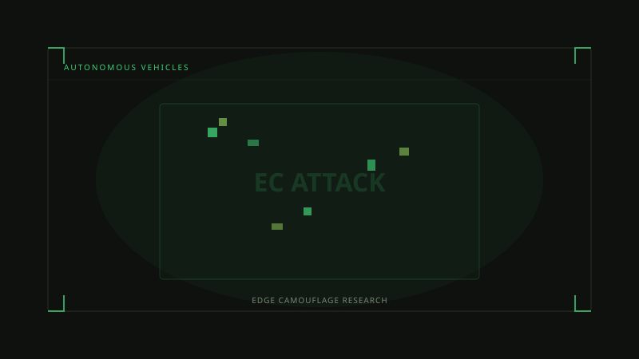
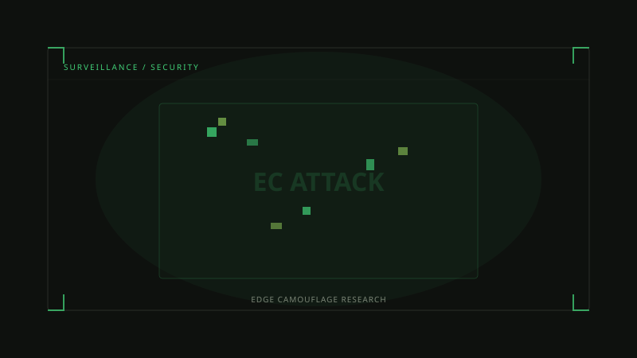
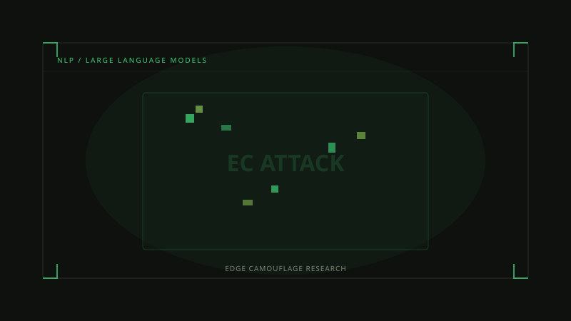
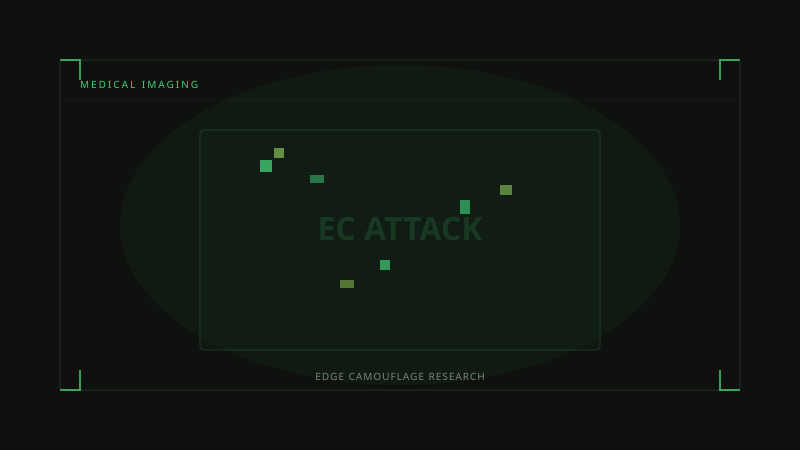

Edge Camouflage adversarial research applied to the domains where AI failures carry the highest stakes.
Each domain presents unique adversarial challenges. Our tools and research are built to meet them.




Empirical results from EC's benchmark evaluation suite across all four deployment domains.
| Domain | Attack Type | Success Rate | ε Budget | Transfer Rate |
|---|---|---|---|---|
| Autonomous Vehicles | Physical Patch (PGD) | 94.2% | ∞ (physical) | 78.1% |
| Surveillance / Face Rec. | Digital FGSM | 97.8% | 8/255 | 82.4% |
| NLP / LLMs | Suffix Jailbreak | 91.3% | 25 tokens | 63.7% |
| Medical Imaging | C&W L2 | 89.5% | 4/255 | 71.2% |
Feedback from labs and practitioners who deploy EC tools in production research.